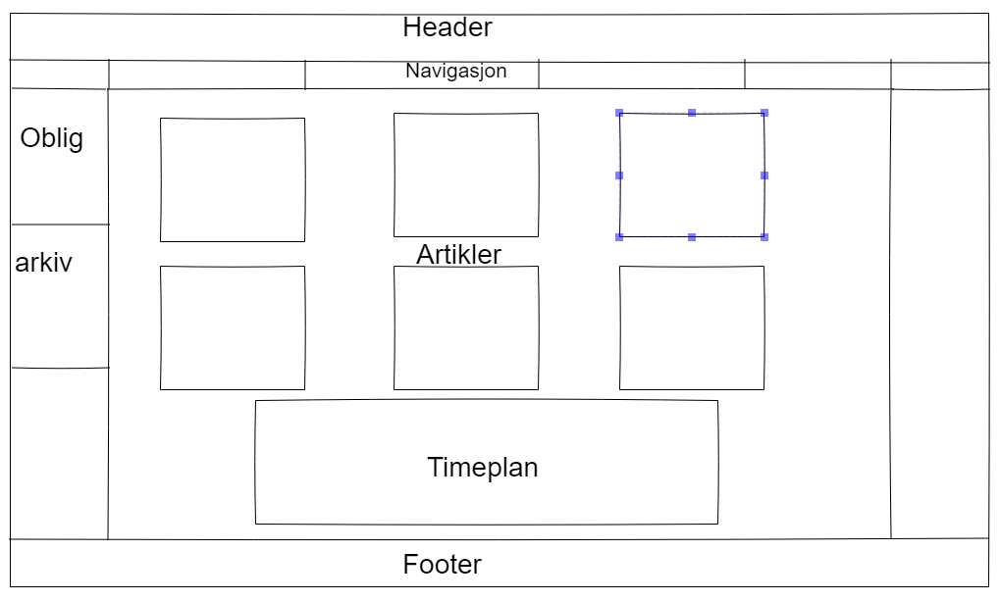
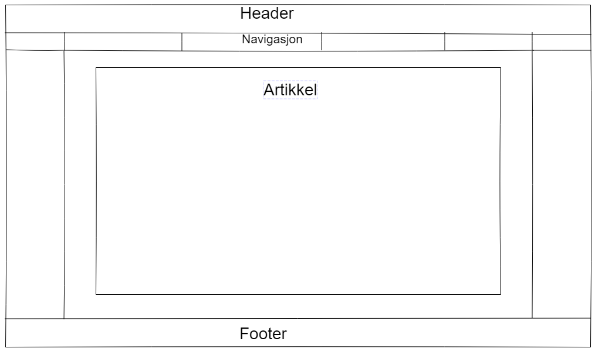

Planlegging av nettsiden
Jeg startet med bare google forskjellige kjennte nettsteder, som Facebook og Youtube. Jeg fant ut at neste alle sidene hadde en sideboks der man kunne se arangamenter, abbonenter, altså noe brukeren bruker ofte. Da tenkte jeg å sette opp Oblig fristene, sammen med linkearkivene på venstre side av hovedinnholdet. Oblig fristene kommer først under det linkearkivene, fordi fristene er viktigere. Jeg bestemte meg for å lage en enkel navigasjons meny under header. Der man kan navigere lett på nettsiden. Jeg sto i dilemma om å lage timeplan selv med tag table, eller importere fra google. For å slippe å oppdatere timeplanen om det skjer noen endringer, så tenkte jeg at det beste var google timeplanen. Dermed kan jeg bruke denne netsiden til vanlig etter oblig også, for å se timene og artiklene jeg har skrevet.
For artikkelsidene tenkte jeg å beholde strukturen for forsiden. Jeg fjernet sidebarene og plasserte en stor boks i midten. 
Her er nettsidene jeg fikk hjelp fra, og litt beskrivelse om hva jeg hentet fra hvor.
| URL | Beskrivelse |
|---|---|
| Her hentet jeg ideen om sidebaren fra, man kan se en liste med forskjellige ting på venstre siden på facebook. | |
| Youtube | Youtube bruker også sidebar, der man kan se alle abbonentene sine. Her kan man også se hvordan videoene er plassert på siden. Jeg valgte å kjøre på med samme stil på artiklene mine på forsiden. |
| VG | Her så jeg at menyen er satt inn i en midtstilt container og plassert på toppen. Det så bra ut på nettsiden min og da kommer også menyen rett foran øynene istedenfor langt til siden. |